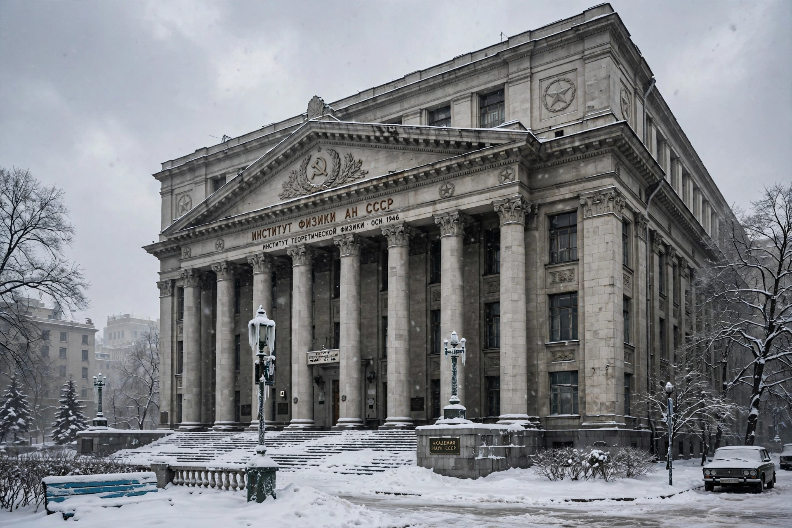

Lebedev Physical Institute
| Lebedev Physical Institute | |
|---|---|
 The Lebedev Institute, Moscow | |
| Established | 1934 (roots in the 18th century) |
| Location | Moscow, Russia |
| Parent body | Russian Academy of Sciences |
| Named after | Pyotr Lebedev |
| Field | Physics |
The P. N. Lebedev Physical Institute of the Russian Academy of Sciences (Russian: Физический институт имени П. Н. Лебедева; abbreviated FIAN) is one of Russia's leading physics research institutes, based in Moscow. It is named after the Russian physicist Pyotr Nikolayevich Lebedev, who first measured the pressure of light. The institute traces its lineage to the physics cabinet of the St Petersburg Academy of Sciences founded in the 18th century, and took its modern form in 1934 when Sergey Vavilov reorganised and moved it to Moscow.
Research and achievements
The institute's research spans lasers and quantum electronics, nuclear and particle physics, astrophysics and cosmic rays, plasma physics, solid-state physics and superconductivity. FIAN scientists have made numerous landmark contributions: Pavel Cherenkov discovered Cherenkov radiation at the institute (with Ilya Frank and Igor Tamm, who explained it — all three received the 1958 Nobel Prize in Physics); Nikolay Basov and Alexander Prokhorov developed the maser/laser principle there (Nobel Prize 1964, shared with Charles Townes); and Vitaly Ginzburg contributed foundational work on superconductivity and cosmic ray theory (Nobel Prize 2003). Andrei Sakharov worked at FIAN on thermonuclear weapons and later on fundamental physics.
In total, seven Nobel laureates are associated with the institute. FIAN operates major facilities including the Lebedev synchrotron facilities, the Astro Space Center (responsible for the RadioAstron space radio telescope) and observatories such as the Pushchino Radio Astronomy Observatory.
Organisation
The institute is divided into divisions covering optics, quantum radiophysics, theoretical physics, solid state physics, nuclear physics and astrophysics, among others, and publishes scientific journals and preprints. It employs several thousand staff and remains a central institution of Russian fundamental physics.